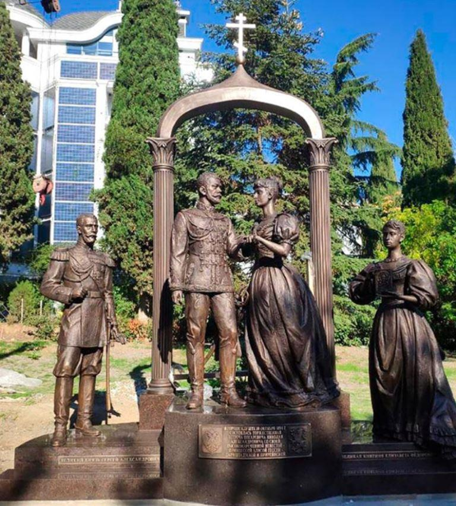
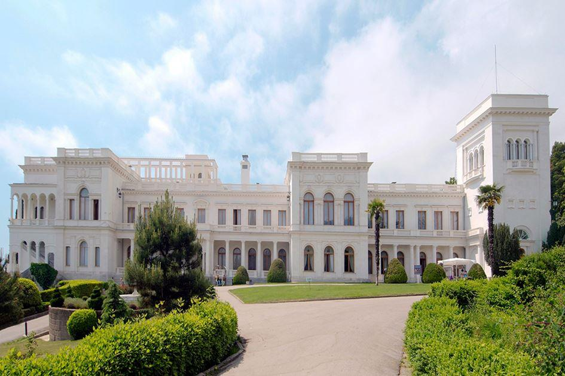
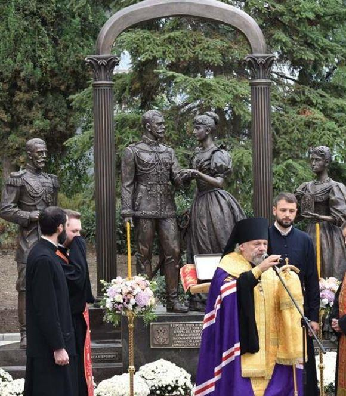
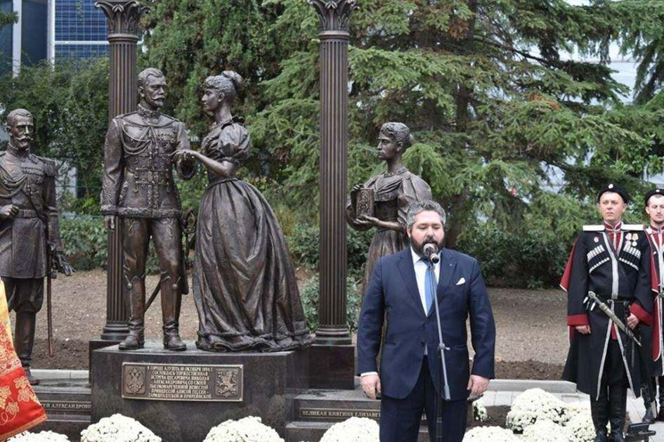
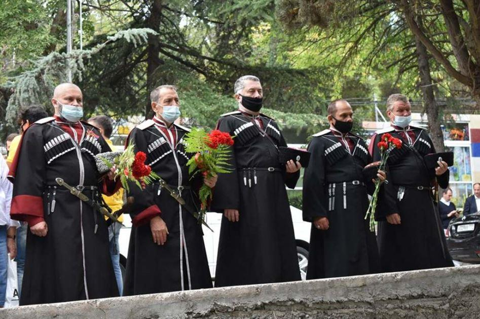

Dernier bastion de l’armée blanche, durant la guerre civile, qui a opposé les monarchistes et les bolchéviques entre 1917 et 1922, le Grand-duc George Romanov, s’est rendu en Crimée le 31 octobre. L’héritier de la maison impériale a rendu hommage à ces russes qui sont morts pour la sauvegarde de l’idée impériale et a inauguré un monument érigé en mémoire de Nicolas II et de sa famille, victimes de la haine bolchévique.
C’était l’une des destinations préférées des Romanov. À trois kilomètres de Yalta, le palais de Livadia rappelle aux habitants de Crimée toute la splendeur d’un régime qui alimente encore aujourd’hui tous les fantasmes.
Dans cette ancienne province ukrainienne, qui a décidé de rejoindre la Fédération de Russie en 2014, le souvenir de la maison impériale est persistant. Encore profondément marquée par les stigmates de la guerre civile qui a opposé monarchistes aux soviétiques entre 1917 et 1922, la Crimée a décidé de rendre hommage aux milliers de leurs compatriotes tombés au nom du Tsar Nicolas II. Invité par le gouvernement du Président Sergey Aksyonov, le Grand-duc George Romanov est venu inaugurer un monument érigé en l’honneur des membres de la maison impériale tragiquement assassinés en 1905 et 1918.
« Je t'embrasse et te caresse à l'infini, je veux te montrer toute la puissance de mon amour pour toi. Toujours à toi jusqu'à la mort et au-delà ». C’est la Fondation Basile Le Grand et le mouvement de « l'Aigle à deux têtes », dirigés par l’oligarque Konstantin Malofeev, qui sont à l’origine de ce monument érigé en mémoire de Nicolas II et de sa famille, victimes de la haine des bolchéviques. Un appel avait été lancé à chaque sculpteur russe pour qu’ils immortalisent le Tsar et son épouse, Alexandra Feodovrona, unis à la vie, à la mort mais à travers un amour inconditionnel. Le tout basé sur une précision historique ne pouvant souffrir d’une éventuelle remise en cause.
Ce sont les artistes Irina Makarova et Maxim Bataev qui ont finalement convaincu le comité mis en place pour surveiller le projet, parmi lesquels se trouvaient le Grand-duc George Romanov ou encore Elena Aksyonova, fondatrice de la chaîne de télévision Tsargrad et épouse du chef pro-monarchiste de l’état de Crimée. C’est d’ailleurs à Alutsha, en Tatarie, que le 10 octobre 1894 Nicolas a rencontré celle qui allait partager sa vie et tous les soubresauts de son règne. « L’œuvre est composée de quatre sculptures [Nicolas et Alexandra, entourés par Sergueï Alexandrovitch, son oncle assassiné en 1905, et son épouse, la grande-duchesse Elizabeth Feodorovna, exécutée par les révolutionnaires] en bronze d'un peu plus de deux mètres de haut, d'un socle en granit et d'une arche qui unit deux cœurs aimants, surmonté d’une croix orthodoxe » expliquent les deux sculpteurs devant un parterre de journalistes et l’Evêque Nestor de Yalta venu bénir le monument. « Ce couple est devenu un symbole de fidélité, le symbole d'une grande famille pieuse et celui du service à l’État et à leur peuple » renchérit Konstantin Malofeev, l’homme qui murmure à l’oreille du Président Vladimir Poutine.
Le Grand-duc George Romanov a souligné l’importance de ce monument pour lui-même et pour les générations futures avant de remercier toutes les personnes impliquées dans ce projet, exprimant l'espoir « que de telles initiatives trouveront un soutien dans d'autres régions de Russie » L’héritier au trône de Russie a également rappelé le courage de ces russes, morts au cours de combats contre les communistes. Dernier bastion des tsaristes, la Crimée a été le refuge du général Piotr Wrangel (1878-1928) qui a tenté de résister à la vague rouge qui submergeait son pays. En conflit avec d’autres officiers, il a échoué toutefois à rejoindre les forces de l’amiral Alexandre Kolchak et bientôt contraint à évacuer la province. Militaire réputé, gestionnaire reconnu par ses pairs, peu de temps avant son départ en exil en novembre 1920, il réunit son armée et propose à chacun de ses soldats de « rester dans la mère-patrie ou de choisir un destin vers l’inconnu ». C’est aussi ici, depuis la Mer noire, que les derniers Romanov ont pu être évacué par les Britanniques vers Constantinople aux côtés de 150 000 de russes blancs. Une délégation de l'Assemblée de la noblesse russe, conduite par Oleg Shcherbatchev, président du conseil central de la Société des descendants de la Première Guerre mondiale, avait fait le déplacement afin d’honorer la mémoire de ces dizaines de milliers de tsaristes, une partie tombée au champ d’honneur sur le sol neigeux de Crimée, et depuis réhabilités par le Kremlin.
Partager cette page